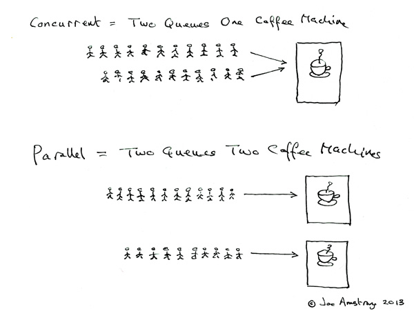

OS
进程和线程
早期操作系统，进程是操作系统管理程序的最小单位；然而，目前 线程才是操作系统调度和管理程序的最小单位
进程，对应一个运行中的程序，具有一个或多个内存映射的内存地址空间，也可能包括一个或多个线程。
线程，线程是进程中活动的对象，每个线程都有独立的程序计数器，进程栈和进程寄存器，内核调度对象是线程而不是进程。在Unix系统里，一个进程包含一个线程，现在的系统一个进程会包含多个线程。对Linux而言，线程是一种特殊的进程，不做特殊区分。
进程线程主要区别
进程和线程的主要差别在于它们是不同的操作系统资源管理方式。
- 进程有独立的地址空间，一个进程崩溃后，在保护模式下不会对其它进程产生影响
- 进程为线程准备了不同的栈用于存放临时数据，但线程之间没有单独的地址空间， 一个线程死掉就等于整个进程死掉（因为线程共享地址空间）
- 多进程的程序要比多线程的程序健壮，但在进程切换时，耗费资源较大，效率要差一些。但对于一些要求同时进行并且又要共享某些变量的并发操作，只能用线程，不能用进程。
简而言之,一个程序至少有一个进程,一个进程至少有一个线程。
进程线程优缺点
- 多进程 优点
- 功能模块化，避免重复造轮子（比如在安卓有一系列服务进程负责绘制等任务，应用只需要通过进程间通信调用绘制进程）
- 增强模块之间的隔离，更加安全
提高容错性，多进程模式最大的优点就是稳定性高。一个子进程崩溃了，不会影响主进程和其他子进程 缺点：多进程模式的缺点是创建进程的代价大，在Unix/Linux系统下，用fork调用还行，在Windows下创建进程开销巨大。另外，操作系统能同时运行的进程数也是有限的，在内存和CPU的限制下，如果有几千个进程同时运行，操作系统连调度都会成问题。进程间通信的开销也大
多线程 优点 线程执行开销小 缺点 线程不利于资源的保护
- 分类 根据进程与线程的设置，操作系统大致分为如下类型：
- 单进程、单线程，MS-DOS大致是这种操作系统；
- 多进程、单线程，多数UNIX(及类UNIX的LINUX)是这种操作系统；
- 多进程、多线程，Win32(Windows NT/2000/XP等)、Solaris 2.x和OS/2都是这种操作系统；
- 单进程、多线程，VxWorks是这种操作系统。
纤程
早期主流操作系统采取一对一的线程模型，用户态线程和内核态线程是一对一关系。 用户态线程，就是纤程 操作系统提供更多用户态线程，用户态线程和内核态线程由一对一向一对多发展。
操作系统调度
Linux commands
Linux grep 命令用于查找文件里符合条件的字符串。
grep 指令用于查找内容包含指定的范本样式的文件，如果发现某文件的内容符合所指定的范本样式，预设 grep 指令会把含有范本样式的那一列显示出来。若不指定任何文件名称，或是所给予的文件名为，则 grep 指令会从标准输入设备读取数据。
Linux 内存
malloc和new申请的都是虚拟内存
malloc函数的实质，有一个将可用的内存块连接起来的链表，调用malloc的时候，会沿着链表找一个满足用户需求的内存块。然后将这个内存块一分为二，一块和用户所申请的内存大小相同，另一块返回到链表中。如果用户申请一个大的内存块，空闲链表上可能没有可以满足用户要求的片段，这个时候malloc函数就会请求延时，对链表上的内存进行整理。如果还是不可以的话， 内存申请失败，返回NULL。 new的话，底层实现还是malloc，在分配失败的时候会抛出bad_alloc类型的异常
malloc() and calloc()
- malloc and calloc() are library functions that allocate memory dynamically.
- It means that memory is allocated during runtime(execution of the program) from the heap segment. ```C void malloc(unsigned int num_bytes)； // malloc()函数有一个参数，即要分配的内存空间的大小： void calloc(size_t num, size_t size); // calloc()函数有两个参数，分别为元素的数目和每个元素的大小，这两个参数的乘积就是要分配的内存空间的大小
/如果调用成功，函数malloc()和calloc()都将返回所分配的内存空间的首地址。/
1. malloc() allocates memory block of given size (in bytes) and returns a pointer to the beginning of the block. malloc() doesn’t initialize the allocated memory.
2. calloc() allocates the memory and also initializes the allocated memory block to zero. If we try to access the content of these blocks then we’ll get 0.
3. After successful allocation in malloc() and calloc(), a pointer to the block of memory is returned otherwise NULL value is returned which indicates the failure of allocation.
## I/O 多路复用
与多进程和多线程技术相比，I/O多路复用技术的最大优势是系统开销小，系统不必创建进程/线程，也不必维护这些进程/线程，从而大大减小了系统的开销。
目前支持I/O多路复用的系统调用有 select，pselect，poll，epoll，I/O多路复用就是通过一种机制，一个进程可以监视多个描述符，一旦某个描述符就绪（一般是读就绪或者写就绪），能够通知程序进行相应的读写操作。但select，pselect，poll，epoll本质上都是同步I/O
Linux中，调用fork()系统创建进程，调用fork()的进程是父进程，新产生的进程是子进程，调用结束时，在返回到这个相同位置上，父进程恢复执行，子进程开始执行，fork()系统调用从内核返回两次，一次回到父进程，一次回到新产生的子进程
Exec()可以传进新的地址空间，把新的程序加载其中，调用exit()退出执行，会释放资源，父进程通过wait4()系统调用来查询子进程是否终结
进程列表存放在任务队列的双向循环列表，每一项类型都是task_struct。内核通过PID来标示进程，最大默认值32768
写时拷贝。传统的Fork()系统调用直接把所有资源复制给新创建的进程，这种实现过于简单且效率低下，因为拷贝数据不共享，Linux的fork()使用写时拷贝，可以推迟甚至免除拷贝，内核不复制整个进程的地址空间，而是让父进程和子进程共享同一个拷贝，需要写入的时候，数据才会被复制，在此之前都是以只读形式共享
Linux通过clone()来实现fork()
Vfork()除了不拷贝父进程的页表，其他功能相同
## 进程间通信
常见的通信方式：
1. 管道pipe：管道是一种半双工的通信方式，数据只能单向流动，而且只能在具有亲缘关系的进程间使用。进程的亲缘关系通常是指父子进程关系。
2. 命名管道FIFO：有名管道也是半双工的通信方式，但是它允许无亲缘关系进程间的通信。
4. 消息队列MessageQueue：消息队列是由消息的链表，存放在内核中并由消息队列标识符标识。消息队列克服了信号传递信息少、管道只能承载无格式字节流以及缓冲区大小受限等缺点。
5. 共享存储SharedMemory：共享内存就是映射一段能被其他进程所访问的内存，这段共享内存由一个进程创建，但多个进程都可以访问。共享内存是最快的 IPC 方式，它是针对其他进程间通信方式运行效率低而专门设计的。它往往与其他通信机制，如信号两，配合使用，来实现进程间的同步和通信。
6. 信号量Semaphore：信号量是一个计数器，可以用来控制多个进程对共享资源的访问。它常作为一种锁机制，防止某进程正在访问共享资源时，其他进程也访问该资源。因此，主要作为进程间以及同一进程内不同线程之间的同步手段。
7. 套接字Socket：套解口也是一种进程间通信机制，与其他通信机制不同的是，它可用于不同及其间的进程通信。
8. 信号Signal ： 信号是一种比较复杂的通信方式，用于通知接收进程某个事件已经发生。
<p align="center" width="100%">
<img width="50%" src="img/IPC.jpg" >
</p> -->
宏内核进程通信：
1. pipe
2. 消息队列
3. 信号量
4. 共享内存
5. 信号
6. socket
# 计算密集型 vs. IO密集型
计算密集型任务由于主要消耗CPU资源，比如计算圆周率、对视频进行高清解码等等，全靠CPU的运算能力。这种计算密集型任务虽然也可以用多任务完成，但是任务越多，花在任务切换的时间就越多，CPU执行任务的效率就越低因此，代码运行效率至关重要。Python这样的脚本语言运行效率很低，完全不适合计算密集型任务。对于计算密集型任务，最好用C语言编写。
第二种任务的类型是IO密集型，涉及到网络、磁盘IO的任务都是IO密集型任务，这类任务的特点是CPU消耗很少，任务的大部分时间都在等待IO操作完成 *（因为IO的速度远远低于CPU和内存的速度）*。对于IO密集型任务，任务越多，CPU效率越高，但也有一个限度。常见的大部分任务都是IO密集型任务，比如Web应用。
IO密集型任务执行期间，99%的时间都花在IO上，花在CPU上的时间很少，因此，用运行速度极快的C语言替换用Python这样运行速度极低的脚本语言，完全无法提升运行效率。对于IO密集型任务，最合适的语言就是开发效率最高（代码量最少）的语言，脚本语言是首选，C语言最差。
# 异步IO
考虑到CPU和IO之间巨大的速度差异，一个任务在执行的过程中大部分时间都在等待IO操作，单进程单线程模型会导致别的任务无法并行执行，因此，我们才需要多进程模型或者多线程模型来支持多任务并发执行。
现代操作系统对IO操作已经做了巨大的改进，最大的特点就是支持异步IO。如果充分利用操作系统提供的异步IO支持，就可以用单进程单线程模型来执行多任务，这种全新的模型称为事件驱动模型，Nginx就是支持异步IO的Web服务器，它在单核CPU上采用单进程模型就可以高效地支持多任务。在多核CPU上，可以运行多个进程（数量与CPU核心数相同），充分利用多核CPU。由于系统总的进程数量十分有限，因此操作系统调度非常高效。用异步IO编程模型来实现多任务是一个主要的趋势。
对应到Python语言，*单线程的异步编程模型称为协程*，有了协程的支持，就可以基于事件驱动编写高效的多任务程序。我们会在后面讨论如何编写协程。
# 协程
又称微线程，纤程。英文名Coroutine。
子程序，或者称为函数，在所有语言中都是层级调用，比如A调用B，B在执行过程中又调用了C，C执行完毕返回，B执行完毕返回，最后是A执行完毕。
所以子程序调用是通过栈实现的，一个线程就是执行一个子程序。
协程看上去也是子程序，但执行过程中，在子程序内部可中断，然后转而执行别的子程序，在适当的时候再返回来接着执行。
```python
def A():
print('1')
print('2')
print('3')
def B():
print('x')
print('y')
print('z')
假设由协程执行，在执行A的过程中，可以随时中断，去执行B，B也可能在执行过程中中断再去执行A，结果可能是：
1
x
y
2
3
z
但是在A中是没有调用B的，所以协程的调用比函数调用理解起来要难一些。
看起来A、B的执行有点像多线程，但协程的特点在于是一个线程执行，那和多线程比，协程有何优势？
最大的优势就是协程极高的执行效率。因为子程序切换不是线程切换，而是由程序自身控制，因此，没有线程切换的开销，和多线程比，线程数量越多，协程的性能优势就越明显。
因为协程是一个线程执行，那怎么利用多核CPU呢？最简单的方法是多进程+协程，既充分利用多核，又充分发挥协程的高效率，可获得极高的性能。
并发concurrency和并行parallel
你吃饭吃到一半，电话来了，你一直到吃完了以后才去接，这就说明你不支持并发也不支持并行。你吃饭吃到一半，电话来了，你停了下来接了电话，接完后继续吃饭，这说明你支持并发。你吃饭吃到一半，电话来了，你一边打电话一边吃饭，这说明你支持并行。并发的关键是你有处理多个任务的能力，不一定要同时。并行的关键是你有同时处理多个任务的能力。所以我认为它们最关键的点就是：是否是『同时』。
吃饭的时候先接电话跟后接电话的比较更像是中断优先级高低的不同，并发应该是一手筷子，一手电话，说一句话，咽一口饭。 并行才是咽一口饭同时说一句话，而这光靠一张嘴是办不到的，至少两张嘴。
parallel是指物理层面的同时允许，有多个executor
concurrency是指在program里面，但是parallelism是指在actual execution里面，哪怕是single core processor也要考虑并发
Process: an independent execution of instructions with independent memory space, stack, heap, and os resource. Each process sees a complete memory space(pretend to be the only task of system) Different processes communicates through interprocess communication(IPC)
Thread:an independent execution of instructions with shared memory space. Each thread has its private stakc, program counter and register states. Threads in the same process shared heap, static memory segment, os resource. Communication performed through shared memory read/write light weight data and resource sharing

-->